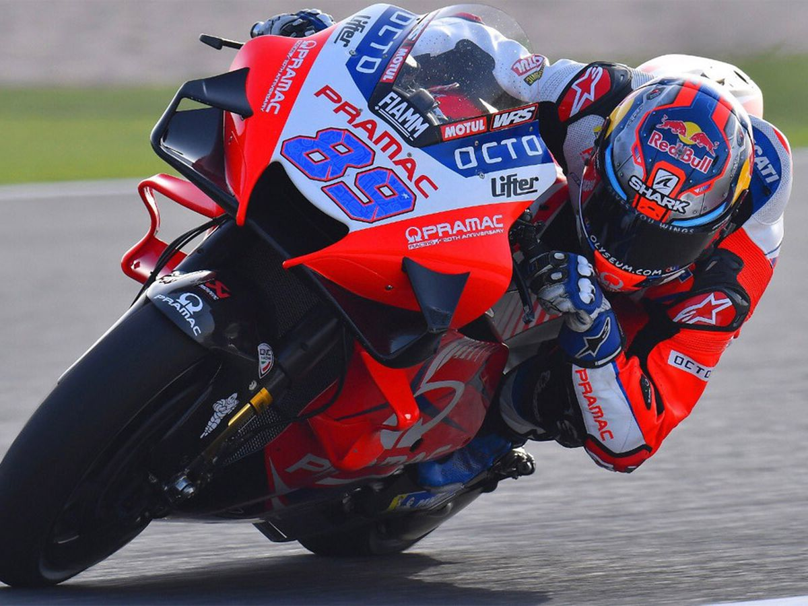
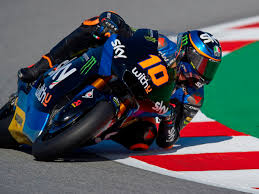
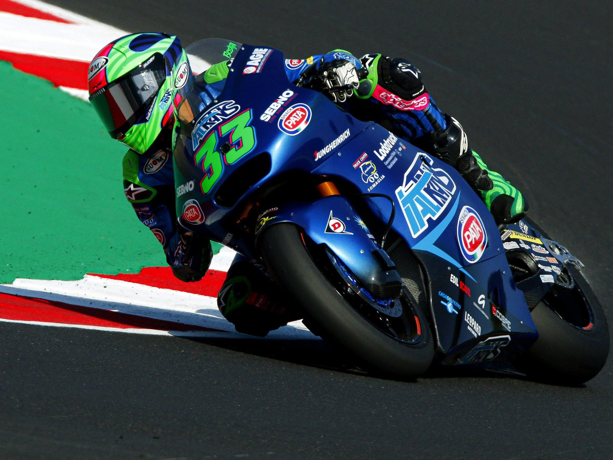
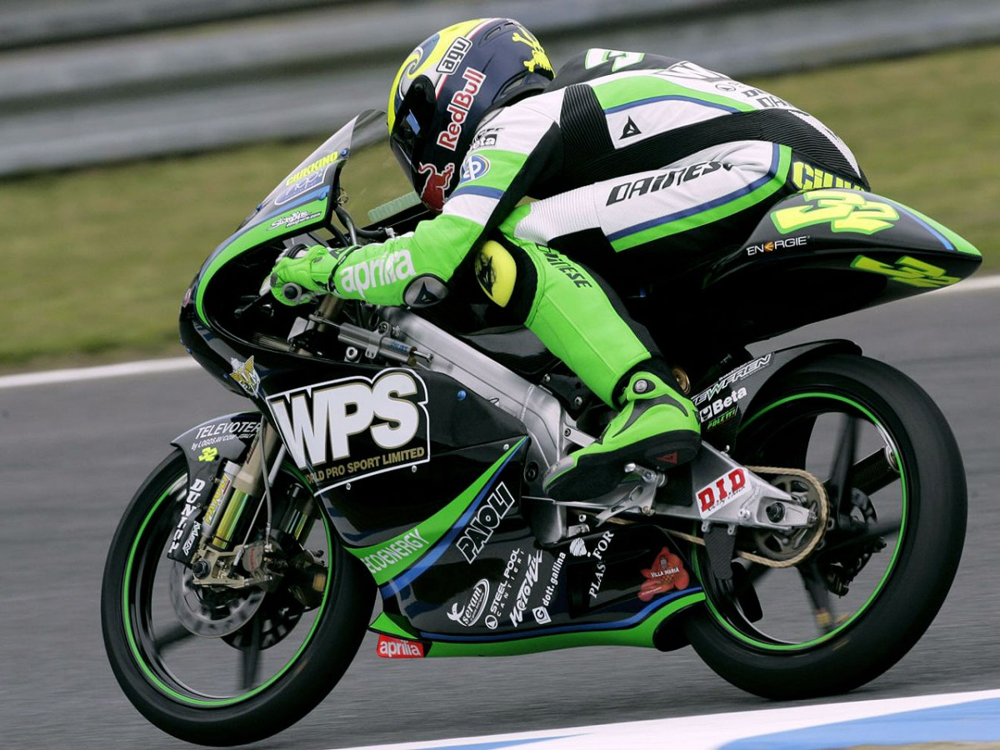

29 Enero 1998
Jorge Martín
Jorge Martín Almoguera es un piloto español de motociclismo que en 2021 comenzó a correr en la categoría de MotoGP con el equipo Pramac Racing con una Ducati oficial. Es el primer piloto madrileño en ser campeón del mundo de motociclismo.

10 Agosto 1997
Luca Marini
Luca Marini es un piloto de motociclismo Italiano que participa en la categoría de MotoGP con el equipo SKY VR46 Avintia Team. Es hermano por parte de madre del piloto de motociclismo Valentino Rossi, nueve veces campeón del mundo.

30 Diciembre 1997
Enea Bastianini
Enea Bastianini es un piloto de motociclismo Italiano que actualmente compite en el Campeonato del Mundo de MotoGP con el Esponsorama Racing.

4 Abril 1993
Lorenzo Savadori
Lorenzo Savadori es un piloto de motociclismo italiano, que participa en el Campeonato del Mundo de MotoGP con el Aprilia Racing Team Gresini.